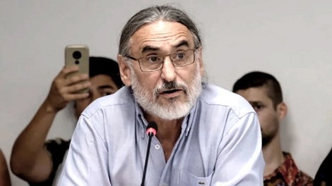
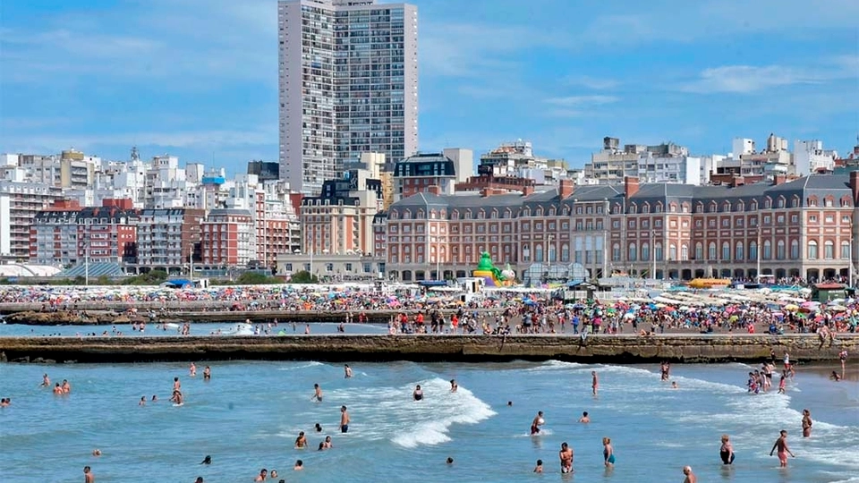
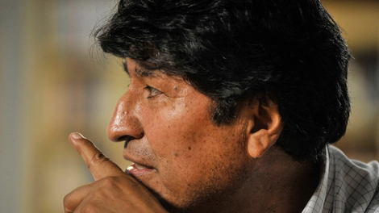

 Argentine researchers neutralized the coronavirus with derivatives of llamas and chicken eggs Announcement of the Ministry of Agriculture and INTA
 The Buenos Aires Minister of Production, Augusto Costa, that the Province will not require a prior test for tourists The summer season will run from December 1 to Easter Non-resident owners will be able to travel before tourists. How the DetectAR operation will be applied and what will happen to vacationers who become infected with coronavirus.
Non-resident owners will be able to travel before tourists. How the DetectAR operation will be applied and what will happen to vacationers who become infected with coronavirus.
 Alberto Fernández congratulated Evo Morales on the victory of MAS in Bolivia The people do not forget those who do not betray them
Almagro congratulated Arce and reminded him of his role in the coup against Evo Morales "If I had some decency - which I do not have - I would resign," said Rafael Correa
He played the Peronist march on his violin and messages of hate rained on him Alberto Fernández defended Dylan, who was attacked on social networks
The intern in Let's change for the statements of Mauricio Macri continues More criticism of the former president